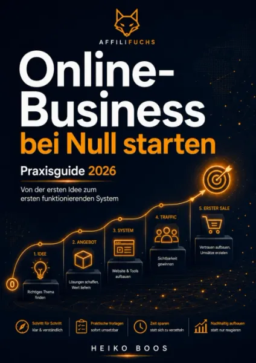
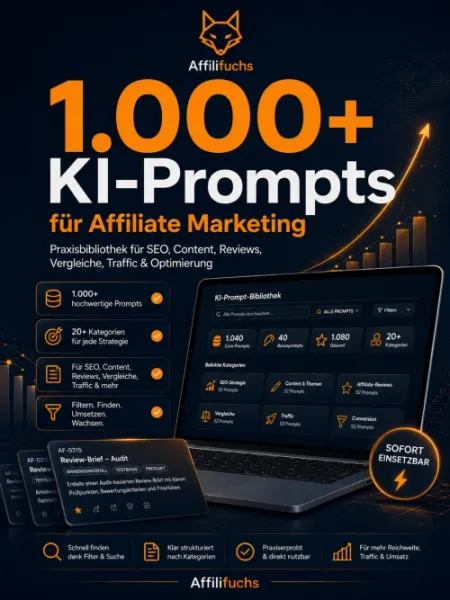
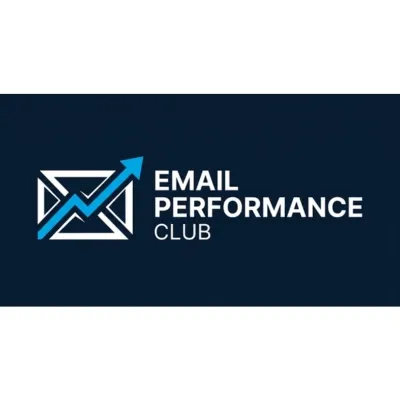

Online-Business bei Null starten – Praxisguide 2026
Produktprofil · Marktplatz-Daten 2026-10-13 · Verkaufsseiten-Recherche 2026-10-13 · Kategorien: Online Marketing & E-Business, Social Media
- Online-Business bei Null starten – Praxisguide 2026 ist ein/e E-Book in Online Marketing & E-Business und Social Media, vertrieben über den Digistore24-Marktplatz von Anbieter HB1976, gelistet seit 2026-09-01.
- Listenpreis $17.77; Digistore24 meldet — Checkout-Konversion, — Stornierungsquote und 50 % Affiliate-Provision.
- Verdienst pro Verkauf (Affiliate): $8.89 (Anbieter-seitige Statistik, keine Prognose).
Interesse an Online-Business bei Null starten – Praxisguide 2026? Aktueller Preis, Boni und Garantiebedingungen finden Sie auf der offiziellen Seite des Anbieters:
Offizielle Verkaufsseite ansehen
Affiliate-Link (Werbung) — wir verdienen ggf. eine Provision, ohne Mehrkosten für Sie.

Marktplatz-Daten
| Produkttyp | E-Book |
|---|---|
| Preis | $17.77 (Single payment) |
| Affiliate-Provision | 50 % |
| Garantie/Rückgabe | Laut Verkaufsseite des Anbieters — vor dem Kauf auf der offiziellen Seite prüfen |
| Anbieter | HB1976 (gelistet seit 2026-09-01) |
| Marktplatz-Statistiken* | Checkout-Konversion — · Stornoquote — · Verdienst/Verkauf $8.89 |
* Anbieter-seitige Statistiken von Digistore24; sie hängen von der Traffic-Qualität ab und sind keine Prognose.
Marktplatz-Beschreibung des Anbieters
Online-Business bei Null starten – Praxisguide 2026 50 % Provision auf Hauptprodukt, Add-ons & Upsells Bewirb einen praxisorientierten Einstiegs-Guide für Menschen, die ein eigenes Online-Business aufbauen möchten, aber noch ganz am Anfang stehen und sich nicht in unzähligen Tools, Plattformen, Geschäftsmodellen und Marketingstrategien verlieren wollen. Online-Business bei Null starten – Praxisguide 2026 führt Käufer Schritt für Schritt von der ersten Idee zu einem einfachen, nachvollziehbaren Online-Business-System. Der Fokus liegt dabei nicht darauf, möglichst viel gleichzeitig aufzubauen. Die zentrale Idee lautet: Erst Zielgruppe, Problem und Angebot klären – dann Schritt für Schritt das System darum entwickeln. Verkaufspreis: 17 € einmalig Affiliate-Provision: 50 % 50 % Provision auch auf Add-ons und Upsells. Verkaufsseite: https://affilifuchs.de/online-business-bei-null-starten/ Worum geht es im Praxisguide? Wer heute ein Online-Business starten möchte, stößt innerhalb kürzester Zeit auf unzählige Möglichkeiten: Affiliate Marketing. Digitale Produkte. Onlinekurse. Coaching. Social Media. SEO. YouTube. E-Mail-Marketing. Funnels. KI. Automatisierungen. Websites. Tools. Bezahlanbieter. Das eigentliche Problem vieler Einsteiger ist deshalb nicht fehlende Information. Es ist: zu viel Information und zu wenig klare Reihenfolge. Genau hier setzt der Praxisguide an. Statt gleichzeitig zehn Baustellen zu eröffnen, entwickelt der Käufer sein Projekt Schritt für Schritt. Von der ersten Idee zum einfachen System Der Praxisguide folgt einem nachvollziehbaren Aufbau. Zunächst werden die Grundlagen geklärt: Für wen möchte ich etwas anbieten? Welches Problem dieser Zielgruppe möchte ich lösen? Welches Geschäftsmodell passt dazu? Was könnte mein erstes Angebot sein? Erst danach folgen Technik, Content, Sichtbarkeit, Traffic und Optimierung. So entsteht aus einer allgemeinen Idee nach und nach ein konkretes Online-Projekt. Schritt 1: Zielgruppe verstehen Am Anfang steht nicht das Tool. Nicht die Website. Nicht Instagram. Und auch nicht der Funnel. Am Anfang steht die Frage: Für wen soll das Business eigentlich entstehen? Der Praxisguide hilft Käufern dabei, ihre Zielgruppe einzugrenzen und relevante Probleme, Wünsche und Bedürfnisse zu erkennen. Schritt 2: Das richtige Problem auswählen Ein Online-Business braucht einen nachvollziehbaren Nutzen. Deshalb arbeitet der Käufer daran, ein Problem zu identifizieren, das: für die Zielgruppe relevant ist klar verständlich ist sinnvoll bearbeitet werden kann zu den eigenen Fähigkeiten und Interessen passt Damit entsteht die Grundlage für ein konkretes Angebot. Schritt 3: Passendes Geschäftsmodell wählen Nicht jedes Geschäftsmodell passt zu jedem Menschen. Einige Modelle benötigen viel Kundenkontakt. Andere brauchen regelmäßig Content. Manche erfordern technisches Verständnis. Andere benötigen mehr Startkapital. Der Praxisguide hilft dabei, ein Geschäftsmodell auszuwählen, das zum geplanten Projekt und den eigenen Ressourcen passt. Schritt 4: Ein klares erstes Angebot entwickeln Viele Einsteiger planen direkt: mehrere Produkte verschiedene Pakete Mitgliedschaften Upsells Kurse Funnels Dabei fehlt häufig noch ein einziges klar verständliches Angebot. Der Praxisguide verfolgt deshalb einen einfacheren Ansatz: Erst ein sinnvolles erstes Angebot. Dann kann später erweitert werden. Schritt 5: Die minimale technische Infrastruktur Ein Online-Business benötigt Technik. Aber nicht zwangsläufig zwanzig verschiedene Tools. Der Käufer lernt deshalb, zunächst nur die technische Infrastruktur einzuplanen, die für das eigene Geschäftsmodell tatsächlich notwendig ist. Der Grundsatz: So einfach wie möglich – so umfangreich wie nötig. Schritt 6: Content und erste Sichtbarkeit Ein Angebot allein reicht nicht. Potenzielle Kunden müssen davon erfahren. Deshalb beschäftigt sich der Praxisguide auch damit, wie erste Inhalte und Sichtbarkeit aufgebaut werden können. Dabei geht es nicht darum, sofort auf jeder Plattform aktiv zu sein. Stattdessen wird ein fokussierter Ansatz verfolgt. Schritt 7: Eine passende Trafficquelle auswählen Google? YouTube? Social Media? Communities? Partnerschaften? Paid Traffic? Nicht jede Trafficquelle passt zu jedem Projekt. Der Praxisguide hilft deshalb dabei, zunächst einen sinnvollen Schwerpunkt zu setzen. Schritt 8: Erste Kennzahlen verstehen Ein Online-Business sollte nicht nur nach Bauchgefühl entwickelt werden. Gleichzeitig braucht ein Einsteiger kein kompliziertes Analytics-Dashboard. Der Praxisguide konzentriert sich deshalb auf wenige sinnvolle Kennzahlen, mit denen erste Entwicklungen beurteilt werden können. Schritt 9: Verbessern statt ständig neu anfangen Ein häufiges Problem im Online-Business: Nach wenigen Wochen wird die nächste Idee begonnen. Neue Website. Neues Geschäftsmodell. Neuer Kanal. Neues Produkt. Der Praxisguide zeigt einen anderen Ansatz: erst messen, dann verbessern. So soll das bestehende System schrittweise stärker werden. Schritt 10: Einen persönlichen 30-/90-Tage-Plan entwickeln Am Ende geht es um konkrete Umsetzung. Der Käufer entwickelt deshalb einen: 30-Tage-Plan für den Start und einen: 90-Tage-Plan für den weiteren Aufbau. Dadurch wird aus dem Wissen ein persönlicher Arbeitsplan. Das ist enthalten Käufer erhalten: das komplette digitale E-Book klaren Nullstart-Prozess Zielgruppen- und Problemdefinition Hilfen zur Geschäftsmodell-Auswahl Entwicklung eines ersten Angebots Planung der minimalen technischen Infrastruktur Content- und Sichtbarkeitsplanung Auswahl einer passenden Trafficquelle einfache Kennzahlen Optimierungsansätze persönlichen 30-Tage-Plan persönlichen 90-Tage-Plan 16 praktische Arbeitsblätter zahlreiche AFFILIFUCHS-Praxisregeln Bonus: 20 typische Fehler beim Start eines Online-Business Damit erhält der Käufer nicht nur Informationen, sondern ein konkretes Arbeitsgerüst für das eigene Projekt. 16 Arbeitsblätter für die Umsetzung Ein wichtiger Bestandteil des Praxisguides sind die enthaltenen Arbeitsblätter. Damit kann der Käufer die Inhalte direkt auf das eigene Projekt übertragen. Statt nur zu lesen: „Definiere deine Zielgruppe.“ wird tatsächlich an der eigenen Zielgruppe gearbeitet. Das Gleiche gilt für: Probleme Geschäftsmodell Angebot Infrastruktur Content Traffic Kennzahlen Prioritäten 30-Tage-Plan 90-Tage-Plan Dadurch eignet sich das E-Book besonders gut als praktischer Begleiter während der Aufbauphase. Der Nullstart-Prozess Das Herzstück des Produkts ist ein klarer Ablauf: Zielgruppe ↓ Problem ↓ Geschäftsmodell ↓ Angebot ↓ minimale Infrastruktur ↓ Content & Sichtbarkeit ↓ Traffic ↓ erste Ergebnisse ↓ Verbesserung ↓ 30-/90-Tage-System Diese Reihenfolge verhindert, dass Käufer beispielsweise eine Website, Social-Media-Kanäle und komplizierte Tools aufbauen, bevor überhaupt klar ist, was verkauft werden soll. Warum dieses Produkt für Affiliates interessant ist Sehr große potenzielle Zielgruppe Das Thema ist bewusst breiter als beispielsweise Affiliate Marketing oder SEO. Der Praxisguide richtet sich grundsätzlich an Menschen, die: ein eigenes Online-Business aufbauen möchten. Mögliche Zielgruppen sind unter anderem: Angestellte Online-Business-Einsteiger nebenberuflich Selbstständige Gründer Freelancer Blogger Content Creator angehende Affiliate Marketer Anbieter digitaler Produkte Coaches Berater Niedrige Einstiegshürde Der komplette Praxisguide kostet: 17 € einmalig Es gibt: kein Abonnement keine monatlichen Gebühren keine laufenden Kosten Damit eignet sich das Produkt sehr gut als niedrigpreisiges Einstiegsangebot. 50 % Provision im Funnel Als Affiliate erhältst du: 50 % Provision auf das Hauptprodukt sowie: 50 % Provision auf provisionsfähige Add-ons und Upsells. Damit kannst du nicht nur am Verkauf des Hauptprodukts verdienen, sondern auch an weiteren Käufen innerhalb des Funnels. Aktuelles Add-on 9 Online-Business-Modelle im Überblick Käufer können den Praxisguide direkt um den Geschäftsmodell-Navigator 2026 ergänzen. Add-on-Preis: 12 € statt 17 € Der Navigator vergleicht neun unterschiedliche Online-Business-Modelle: Affiliate Marketing Digitale Produkte Onlinekurse & Wissensprodukte Dienstleistungen & Freelancing Coaching & Beratung Membership / Abo-Modell Content-Business E-Commerce White Label / PLR / Lizenzprodukte Die Modelle werden unter anderem bewertet nach: Startaufwand Startkapital Zeitbedarf Technik benötigten Fähigkeiten Contentbedarf Kundenkontakt Verkaufsaufwand Skalierbarkeit laufendem Arbeitsaufwand persönlichem Arbeitsfit Die Kombination der beiden Produkte ist besonders sinnvoll: „Online-Business bei Null starten“ zeigt, wie aus einer Idee Schritt für Schritt ein funktionierendes Projekt entsteht. Der Geschäftsmodell-Navigator hilft bei der Entscheidung, welches Geschäftsmodell dafür gewählt werden sollte. Auch auf dieses Add-on erhältst du: 50 % Affiliate-Provision. Für welche Zielgruppen eignet sich das Produkt? Der Praxisguide lässt sich besonders gut bei Zielgruppen rund um folgende Themen bewerben: Online-Business Online-Business starten Selbstständigkeit nebenberuflich selbstständig Geld verdienen im Internet Affiliate Marketing digitale Produkte Blogging Content Business Freelancing Coaching Online Marketing SEO Traffic E-Commerce KI im Online-Business Existenzgründung Side Business Besonders interessante Käufergruppen Komplette Online-Business-Einsteiger Die zentrale Zielgruppe. Menschen, die grundsätzlich etwas Eigenes im Internet aufbauen möchten, aber noch keine klare Struktur haben. Menschen mit einer Idee, aber ohne Plan Manche Interessenten wissen bereits ungefähr, was sie machen möchten. Was fehlt, ist die Reihenfolge: Was zuerst? Was danach? Welche Technik brauche ich wirklich? Wann brauche ich Traffic? Der Guide bringt diese Bereiche in eine klare Struktur. Menschen mit zu vielen Ideen Auch der umgekehrte Fall ist häufig: Zu viele Geschäftsmodelle. Zu viele Produkte. Zu viele Plattformen. Zu viele Tools. Der Praxisguide hilft dabei, bewusst zu reduzieren. Angestellte und nebenberufliche Gründer Wer ein Online-Business neben einem Hauptjob aufbauen möchte, kann es sich kaum leisten, Zeit in unnötige Baustellen zu investieren. Der Nullstart-Ansatz eignet sich deshalb besonders gut für diese Zielgruppe. Affiliate-Marketing-Einsteiger Wer Affiliate Marketing als Geschäftsmodell gewählt hat, kann den allgemeinen Aufbauprozess ebenfalls auf das eigene Projekt übertragen. Anbieter digitaler Produkte Auch ein erstes E-Book, eine Vorlage, ein Kurs oder ein anderes digitales Angebot benötigt: Zielgruppe Problem Angebot Infrastruktur Sichtbarkeit Traffic Der Nullstart-Prozess ist deshalb auch für diese Zielgruppe relevant. Starke Werbewinkel für Affiliates „Online-Business bei Null starten“ Der direkteste Werbewinkel. Ideal für Menschen, die wirklich noch am Anfang stehen. „Du willst online starten, weißt aber nicht womit?“ Ein sehr starker Einstieg. Der Praxisguide bringt die wichtigsten Entscheidungen in eine sinnvolle Reihenfolge. „Von der Idee zum ersten funktionierenden System“ Dieser Winkel beschreibt das Produkt sehr treffend. Es geht nicht nur um Ideen, sondern um die Verbindung aus: Zielgruppe + Problem + Angebot + Sichtbarkeit + Traffic + Optimierung. „Welche Schritte brauchst du wirklich für dein erstes Online-Business?“ Gut für Einsteiger, die von der Vielzahl an Informationen überfordert sind. „Online-Business ohne Tool-Chaos“ Ein starker Differenzierungswinkel. Der Guide setzt bewusst auf minimale notwendige Infrastruktur. „Du brauchst nicht 20 Tools zum Start“ Ideal für Zielgruppen, die bisher glauben, zunächst: Funnel-Software Newsletter-System CRM Automatisierung Analytics Social-Media-Tools Kursplattform Shop-System gleichzeitig einrichten zu müssen. „Erst Angebot – dann Technik“ Eine sehr starke Kernbotschaft. Viele Einsteiger machen es genau andersherum. „30 Tage für deinen strukturierten Nullstart“ Der enthaltene 30-Tage-Plan eignet sich hervorragend für konkrete Werbekampagnen. „Online-Business Schritt für Schritt statt alles gleichzeitig“ Diese Botschaft trifft den Kern des Produkts besonders gut. „Was brauchst du wirklich, um online zu starten?“ Sehr gut geeignet für: Blogbeiträge YouTube-Videos Social Media Newsletter Tutorials Vergleichscontent Die zentrale Verkaufsbotschaft Der Praxisguide sagt nicht: „Du brauchst mehr Tools.“ Er sagt: „Du brauchst zuerst mehr Klarheit.“ Der Aufbau beginnt deshalb mit: Wer ist meine Zielgruppe? ↓ Welches Problem löse ich? ↓ Welches Geschäftsmodell passt dazu? ↓ Was ist mein erstes Angebot? ↓ Welche minimale Technik brauche ich? ↓ Wie werde ich sichtbar? ↓ Woher kommen Besucher? ↓ Was funktioniert? ↓ Was verbessere ich? Dieser Ansatz macht das Produkt besonders für Einsteiger verständlich. Was unterscheidet den Nullstart-Guide von allgemeinen Online-Business-Ratgebern? Der Praxisguide will nicht möglichst viele Geschäftsmodelle und Strategien gleichzeitig vermitteln. Das Ziel ist vielmehr: eine klare Reihenfolge. Käufer werden bewusst davon abgehalten, zu früh: mehrere Produkte zu bauen zu viele Plattformen zu starten komplexe Funnels einzurichten zahlreiche Tools zu abonnieren überall Content zu produzieren ständig das Geschäftsmodell zu wechseln Stattdessen wird zunächst ein einfaches Grundsystem aufgebaut. Der 30-Tage-Plan Der Käufer entwickelt einen konkreten Plan für die ersten 30 Tage. Dabei geht es insbesondere darum: wichtige Entscheidungen zu treffen Grundlagen aufzubauen unnötige Aufgaben zu vermeiden erste Umsetzungsschritte zu beginnen einen realistischen Arbeitsrhythmus zu finden Damit wird aus der allgemeinen Idee „Ich möchte ein Online-Business starten“ ein konkretes Projekt. Der 90-Tage-Plan Nach dem Nullstart geht es um Stabilisierung. Der 90-Tage-Plan hilft dabei: erste Ergebnisse auszuwerten Content weiterzuentwickeln Traffic aufzubauen das Angebot zu verbessern funktionierende Prozesse zu wiederholen unnötige Aktivitäten zu reduzieren Der Käufer erhält damit einen Rahmen über die ersten Tage hinaus. 20 typische Fehler beim Online-Business-Start Als Bonus behandelt der Praxisguide 20 typische Fehler. Dazu gehören beispielsweise: zu viele Geschäftsmodelle gleichzeitig keine klare Zielgruppe kein konkretes Problem unklarer Nutzen zu viele Angebote zu viel Technik zu viele Tools zu viele Trafficquellen zu frühe Automatisierung ständiger Strategiewechsel fehlende Kennzahlen Optimieren ohne Daten Damit hilft der Guide nicht nur beim Aufbau, sondern auch beim Vermeiden typischer Fehlstarts. Vorteile für Käufer Der Praxisguide hilft dabei, zentrale Fragen zu beantworten: Was soll ich überhaupt aufbauen? Für wen ist mein Business gedacht? Welches Problem möchte ich lösen? Welches Geschäftsmodell passt dazu? Was kann mein erstes Angebot sein? Welche Technik brauche ich wirklich? Wie werde ich sichtbar? Welche Trafficquelle passt zu meinem Projekt? Was sollte ich messen? Was mache ich in den ersten 30 Tagen? Wie entwickle ich das Projekt über 90 Tage weiter? Damit entsteht aus einer vagen Online-Business-Idee ein strukturierter Arbeitsplan. Deine Affiliate-Provision 50 % auf das Hauptprodukt 50 % auf Add-ons 50 % auf Upsells 50 % auf weitere provisionsfähige Angebote innerhalb des Funnels Das Hauptprodukt kostet: 17 € einmalig Das aktuelle Add-on „9 Online-Business-Modelle im Überblick“ kostet: 12 € statt 17 € Damit kann bereits beim ersten Bestellvorgang ein zusätzlicher Warenkorbwert entstehen. Produktdetails Produkt: Online-Business bei Null starten – Praxisguide 2026 Preis: 17 € einmalig Produktart: Digitales E-Book / Praxisguide Kern: klarer Nullstart-Prozess Arbeitsmaterial: 16 Arbeitsblätter Zusätzlich: zahlreiche AFFILIFUCHS-Praxisregeln Planung: persönlicher 30-Tage-Plan Weiterentwicklung: persönlicher 90-Tage-Plan Bonus: 20 typische Fehler beim Start eines Online-Business Abonnement: Nein Laufende Kosten: Nein Auslieferung: Digital über Digistore24 Affiliate-Provision: 50 % Provision auf Add-ons: 50 % Provision auf Upsells: 50 % Wichtiger Hinweis für Affiliates Bitte bewirb den Praxisguide seriös. Verzichte insbesondere auf Aussagen wie: „garantiert Geld verdienen“ „garantierter Umsatz“ „sicheres Online-Einkommen“ „automatisch Geld verdienen“ „passives Einkommen ohne Arbeit“ „finanzielle Freiheit garantiert“ „in 30 Tagen profitabel“ „Job kündigen nach 90 Tagen“ Der Aufbau eines Online-Business ist mit unternehmerischem Risiko verbunden. Ergebnisse hängen unter anderem von: Geschäftsmodell Zielgruppe Problem Angebot Markt Wettbewerb Fähigkeiten Budget Traffic Marketing Zeit Umsetzung und weiteren Faktoren ab. Das Produkt enthält daher keine Garantie für bestimmte Besucherzahlen, Leads, Verkäufe, Umsätze, Gewinne oder Einnahmen.
Von der Verkaufsseite des Anbieters
Seitentitel: Online-Business bei Null starten - Praxisguide
Meta-Beschreibung: Online-Business bei Null starten - Praxisguide
Hauptüberschrift
Online Business bei Null starten
Online-Business bei Null starten
Abschnitts-Überschriften
- Du hast nicht zu wenige Möglichkeiten. Du hast wahrscheinlich zu viele.
- Sieben Schritte statt hundert Einzelaufgaben
- Nicht zuerst: „Was kann ich verkaufen?“
- Nicht jedes Online-Business funktioniert gleich.
- Was genau bietest du an?
- Baue nur die Technik, die du gerade brauchst.
- Ein gutes Angebot reicht nicht. Menschen müssen es finden.
- Nicht sofort skalieren. Zuerst verstehen.
- Dein 30-Tage-Nullstart-Plan
- 30 Tage starten. 90 Tage stabilisieren.
Einstiegstext
Von der ersten Idee zum einfachen funktionierenden System: Finde eine passende Zielgruppe, entwickle ein sinnvolles Angebot und baue Schritt für Schritt dein erstes Online-Business auf.
Affiliate Marketing. Digitale Produkte. Dienstleistungen. Content. Social Media. KI. YouTube. SEO. Funnels. Newsletter. Automatisierungen.
Alles kann funktionieren. Aber du kannst nicht sinnvoll mit allem gleichzeitig anfangen.
Du siehst ständig neue Möglichkeiten und bist unsicher, welche davon wirklich zu dir passt.
Fragen, die die Verkaufsseite beantwortet
- Ist das E-Book für absolute Anfänger geeignet?
- Muss ich bereits eine Geschäftsidee haben?
- Geht es nur um Affiliate Marketing?
- Brauche ich eine Website?
- Brauche ich eine E-Mail-Liste?
- Brauche ich Social Media?
- Was ist der 30-Tage-Nullstart-Plan?
- Verspricht der Guide bestimmte Einnahmen?
- Was erhalte ich nach dem Kauf?
Recherche-Methode: rohes HTML · 1712 Wörter · Qualität: rich · recherchiert am 2026-10-13. Vollständige Recherche-Datei (MD) ↗
Wie Produkte dieser Art geliefert werden
Allgemeiner Hinweis zu diesem Produkttyp (keine anbieterspezifische Anleitung): E-Books auf Digistore24 werden als digitaler Download geliefert (meist PDF/EPUB): direkt nach dem Checkout erhalten Sie einen Downloadlink oder Mitgliederzugang und können auf jedem Gerät lesen. Für die genaue Anwendung von Online-Business bei Null starten – Praxisguide 2026 sind die offizielle Verkaufsseite und die enthaltenen Materialien maßgeblich.
Gut zu wissen
- Keine Garantie-Formulierung in unserer Recherche gefunden — bestätigen Sie das Rückgabefenster auf der offiziellen Seite, bevor Sie kaufen.
- Marktplatz-Zahlen (Preis, Provision, Konversion, Stornoquote) — Quelle: offizielle Digistore24-Marktplatz-API (Affiliate-Sicht), Stand 2026-10-13. Gegenprüfung: Marktplatz-Suche nach Produkt-ID 494495.
- Verkaufsseiten-Zitate — Quelle: https://affilifuchs.de/online-business-bei-null-starten/, abgerufen 2026-10-13 (Methode: rohes HTML). Verify: offizielle Seite öffnen.
- Garantie / Rückgabe — vom Anbieter festgelegt; vor dem Kauf auf der Verkaufsseite bestätigen.
- Nicht von uns geprüft: Produktqualität, Ergebnisse, Testimonials — kein Praxistest für dieses Listing durchgeführt.
Häufige Fragen zu Online-Business bei Null starten – Praxisguide 2026
Antworten aus dem Marktplatz-Snapshot (2026-10-13) und der Verkaufsseiten-Recherche (2026-10-13); Anbieteraussagen sind inline gekennzeichnet.
Was ist Online-Business bei Null starten – Praxisguide 2026?
Online-Business bei Null starten – Praxisguide 2026 ist ein Angebot des Typs „E-Book" im Digistore24-Marktplatz, Anbieter: HB1976, gelistet seit 2026-09-01. Eingepflegt unter Online-Marketing & E-Business und Social Media. Digistore24 wickelt Checkout, Lieferung und Rückgaben ab.
Wie viel kostet Online-Business bei Null starten – Praxisguide 2026?
Der Digistore24-Marktplatz listet es für $17.77 (single payment). Preise legt der Anbieter fest und können sich ändern — der Marktplatz-Eintrag oben zeigt den Schnappschuss; die offizielle Verkaufsseite zeigt den aktuellen Preis.
Gibt es eine Geld-zurück-Garantie für Online-Business bei Null starten – Praxisguide 2026?
Unsere Verkaufsseiten-Recherche hat keine explizite Garantie-Formulierung gefunden. Viele Digistore24-Produkte bieten 60 Tage Geld-zurück, aber das legt jeder Anbieter selbst fest — bestätigen Sie es auf der offiziellen Verkaufsseite, bevor Sie kaufen.
Ist Online-Business bei Null starten – Praxisguide 2026 seriös?
Wir bewerten keine Seriosität — wir veröffentlichen überprüfbare Zahlen: Anbieter HB1976 (gelistet seit 2026-09-01), Checkout-Konversion —, Stornoquote —, Affiliate-Verdienst/Verkauf $8.89 (alles Anbieter-seitige Marktplatz-Statistiken). Lesen Sie unsere 6-Punkte-Bewertungsmethode und entscheiden Sie anhand der Zahlen — oder diskutieren Sie Online-Business bei Null starten – Praxisguide 2026 auf GitHub.
Wo kann ich Online-Business bei Null starten – Praxisguide 2026 sicher kaufen?
Nur über die offizielle Verkaufsseite, die auf dieser Seite verlinkt ist (Checkout und Rückgaben laufen über Digistore24). Prüfen Sie dort Preis und Garantie vor der Bestellung. Der Link ist ein Affiliate-Link — der Kauf unterstützt diese Website ohne Mehrkosten für Sie.
Wie erhalte ich Online-Business bei Null starten – Praxisguide 2026 nach der Zahlung?
Der Checkout läuft über Digistore24: Nach der Zahlung erhalten Sie Ihren Zugang oder Download per E-Mail und in Ihrem Digistore24-Kundenkonto. Lieferdetails für diesen Produkttyp: E-Books auf Digistore24 werden als digitaler Download geliefert (meist PDF/EPUB): direkt nach dem Checkout erhalten Sie einen Downloadlink oder Mitgliederzugang und können auf jedem Gerät lesen. Bei Problemen kann der Digistore24-Käufersupport Ihre Bestellung wiederherstellen.
Alle 50 Käuferfragen zu Online-Marketing & E-Business — das komplette Kategorie-FAQ.
Online-Business bei Null starten – Praxisguide 2026 auf Reddit diskutieren
In Community-Threads vergleichen echte Käufer Erfahrungen. Wir verlinken Communities, keine einzelnen Posts — Threads verschwinden, Subreddits bleiben:
- r/Unternehme — deutschsprachige Community mit Diskussionen zu online marketing & e-business.
- r/Vertrieb — deutschsprachige Community mit Diskussionen zu online marketing & e-business.
- Reddit-Suche nach „Online-Business bei Null starten – Praxisguide 2026" — Live-Ergebnisse, von uns nicht beeinflusst.
- Top-„Erfahrungs"-Treffer dieses Jahr — selbst nach Aktualität filtern.
Passendes auf Amazon.de
Physische Produkte und Zubehör, die häufig zusammen mit Online-Business bei Null starten – Praxisguide 2026 gekauft werden:
- Marketing Bücher auf Amazon.de — Top-Ergebnisse, Amazon-Ranking.
- Bestseller: Marketing Bücher — live Liste von Amazon, von uns nicht kuratiert.
Werbung: Als Amazon-Partner verdient DigistorePicks DE an qualifizierten Käufen (Partner-tag adminstorede-21). Amazon setzt eigene Preise und Provisionen (niedrige einstellige Prozente — weit unter den 30–75% der Digistore24-Anbieter). Amazon ist ein Convenience-Angebot für Sachprodukte, kein Ersatz für das digitale Produkt oben.
Ähnliche Angebote in Online-Marketing & E-Business

SHOWUP 3 Monate Strategie- und Umsetzungsbegleitung für dein Business. Du steckst Zeit und Arbeit in deinen Content, feilst an Angeboten und denkst über deine P

Bis zu 1.046 € Provision pro Empfehlung — mit einem Produkt, das sich von selbst verkauft. Stell dir vor, du empfiehlst ein Produkt, das nicht nur gut konvertie

Verdiene 50% Provision mit der #1 Masterclass für Online-Kurs-Business Promote das kostenlose Online Training „Online Kurse erstellen und passiv verkaufen mit K

Das ist die mächtigste Social-Media-Kooperation, die der deutschsprachige Raum jemals gesehen hat. Wenn die TikTok-Ikone Social Media Buddy , der den Algorithmu
Weitere Angebote von HB1976
Gesamtes Sortiment: HB1976 Anbieter-Hub — alle Listings mit Marktplatz-Daten.
Affiliate Marketing mit KI – Praxisguide 2026 50 % Provision auf Produkt, Add-ons & Upsells Bewirb einen praxisorientierten Guide für Affiliate Marketer, di
Affiliate Marketing Praxisplan – 5 Strategien für den Start 50 % Provision auf Hauptprodukt, Add-ons & Upsells Bewirb einen praxisorientierten Strategie-Gui

1000+ KI-Prompts für Affiliate Marketing 50 % Provision auf Hauptprodukt, Add-ons & Upsells Bewirb eine umfangreiche KI-Prompt-Bibliothek speziell für Affil

50 % Provision auf Hauptprodukt, Add-ons & Upsells Bewirb einen praxisorientierten Traffic-Guide für Online-Unternehmer, Affiliate Marketer, Blogger und Cre
Online-Business bei Null starten – Praxisguide 2026 ist auch gelistet in
Social Media (391 Produkte)
Ähnliche Preislage in Online-Marketing & E-Business

EPC Community Abo: Über 50 Mitglieder im 1. Monat! Produkt-Highlight: Wie ich 868 € in 1 Woche mit 3 E-Mail-Swipes machte. Jede Woche exakte Praxis-Mails, Live-
Empfehle "TikTok Marketing Insider-Hacks" und verdiene bis zu 40% jeden Monat an Provisionen! Du kannst die "TikTok Marketing Insider-Hacks"

100 % Provision auf den Einstieg bewusst so geplant. Der Easy Business Kickstart ist Teil meines „Hier verdienst du“-Konzeptes . Ich weiß aus eigener Erfahrung,
Ähnliche Suchanfragen
Wo Sie es sich ansehen können
Wo Sie es sich ansehen können
Aktuelle Preise, Garantie und Boni finden Sie auf der offiziellen Verkaufsseite:
Offizielle Verkaufsseite ansehen
Das ist ein Affiliate-Link (Werbung) — kaufen Sie darüber, verdienen wir ggf. eine Provision, ohne Mehrkosten für Sie.
Quellen & weiterführende Informationen
- Offizielle Verkaufsseite (aktueller Preis, Garantie, Boni): affilifuchs.de/online-business-bei-null-starten (Affiliate-Link)
- Öffentliche Digistore24-Produktseite: digistore24.com/product/494495
- Vollständige Recherche-Datei (Markdown, versioniert): content/products/58820-online-business-bei-null-starten-praxisguide-2026.md
- Affiliate-Supportseite des Anbieters: affilifuchs.de/partnerprogramm/
- Marktplatz-Kategorie: Online-Marketing & E-Business
Wie wir Produkte wie Online-Business bei Null starten – Praxisguide 2026 bewerten
Sechs Prüfungen, ausschließlich mit offiziellen Marktplatz-Zahlen. Die vollständige Bewertungsmethode lesen · unsere Recherche-Standards & Kennzeichnung.
Fragen oder eigene Erfahrungen mit Online-Business bei Null starten – Praxisguide 2026?
Praxis-Tests veröffentlichen wir erst, nachdem wir ein Produkt selbst gekauft haben — aber Ihre Erfahrung hilft anderen Lesern: Diskussion zu Online-Business bei Null starten – Praxisguide 2026 auf GitHub starten/verfolgen. Falsche Zahl gefunden? Korrektur melden — jede Seite zeigt ihre Datenstände, Korrekturen gelten für die ganze Website.